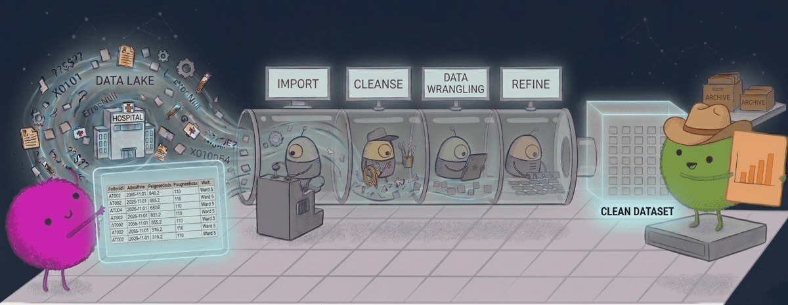

flowchart TB
classDef patients fill:#eef6ff,stroke:#7aa6d8,stroke-width:1.5px,color:#1f2d3d
classDef admissions fill:#f3f8ee,stroke:#8fb27e,stroke-width:1.5px,color:#1f2d3d
classDef episodes fill:#fff4e8,stroke:#d9a15b,stroke-width:1.5px,color:#1f2d3d
classDef outcomes fill:#f7efff,stroke:#a88acb,stroke-width:1.5px,color:#1f2d3d
P["patients<br/><code>patient_id</code>"]
A["admissions<br/><code>spell_id</code><br><code>patient_id</code>"]
E["episodes<br/><code>episode_id</code><br><code>spell_id</code>"]
O["outcomes<br/><code>spell_id</code>"]
P <-->|"one-to-many"| A
A <-->|"one-to-many"| E
A <-->|"one-to-one"| O
class P patients
class A admissions
class E episodes
class O outcomes
Practicals 3–5: Working with data
This practical uses synthetic Hospital Episode Statistics (HES) data on hip fractures to practise core data manipulation skills: importing data, recoding variables, validating keys, joining data at different levels, reshaping, and producing summaries. You will work with four linked tables that reflect a common NHS-style data structure: patient-level, spell-level, episode-level, and outcomes.
The practical has three parts, one for each practical slot in Session 3:
- Part 1 (Practical 3): creating and recoding columns with
mutate(),na_if()andcase_when(). - Part 2 (Practical 4): checking keys and joining tables.
- Part 3 (Practical 5): reshaping, grouping and summarising.
Start with the import section below, which sets up the data for all three parts.
All data in this practical is simulated for teaching purposes.

Datasets
We will use four linked datasets:
hes_patients
One row per patient.
Contains patient-level information that does not usually change across admissions, such as:
patient_id- Sex
- Date of birth
- Ethnicity
- Area deprivation (IMD quintile)
hes_admissions
One row per hospital spell.
A spell is one continuous hospital stay, from admission to discharge. Contains spell-level information such as:
spell_idpatient_id- Admission date
- Discharge date
- Admitting hospital
- Length of stay
- Discharge destination
hes_episodes
One or more rows per spell.
An episode is one phase of care within a hospital stay, usually under one consultant or specialty.
Contains episode-level information such as:
episode_idspell_id- Episode start and end date
- Procedure codes
- Diagnosis codes
- Consultant specialty
hes_outcomes
One row per spell with derived outcomes.
Contains summary measures calculated for each hospital stay, such as:
spell_idreadmission_30d(readmitted within 30 days)death_30d(died within 30 days)time_to_surgery_dayslong_stay_flag
TipWhat is a spell and what is an episode?
In HES data, a spell is the full hospital stay from admission to discharge.
An episode is one part of that stay under a particular consultant or clinical team.
For example, a patient is admitted with a hip fracture through the emergency department. They are first under trauma and orthopaedics for surgery, and later transferred to a geriatric medicine team for ongoing recovery. That could appear as one spell made up of two episodes.
So, one spell can contain multiple episodes.
Join keys
The four tables are linked, but they are not all stored at the same level. Before joining them, it helps to be clear about which identifier belongs to which unit.
patientsis at the patient level, with one row perpatient_idadmissionsis at the spell level, with one row perspell_idoutcomesis also at the spell level, with one row perspell_idepisodesis at the episode level, with potentially multiple rows for eachspell_id
Import
- Set up a project for this practical, as described in the slides on project organisation:
- In RStudio, choose File > New Project… > New Directory > New Project and create a project called
hes-practical. - Inside it, create three folders:
data,scriptsandoutputs. - Download
hes_patients.csv,hes_admissions.csv,hes_episodes.csvandhes_outcomes.csvand save them in thedatafolder. - Create a new script,
scripts/01-import.R, and use it to import all four datasets withread_csv()andhere().
- In RStudio, choose File > New Project… > New Directory > New Project and create a project called
TipHint
here("data", "hes_patients.csv") builds the path to hes_patients.csv inside the data folder, starting from the folder that contains your .Rproj file. If you haven’t used it before, install the here package first with install.packages("here").
Part 1: Creating and recoding columns
This is Practical 3. The main exercise is Part 2 of Practical 2: work through questions 9 to 12, and do question 13 if you have time. You’ve already imported admissions and patients above, so you can skip the import step on that page.
If you have time, come back here for question 2. Either way, we’ll use the cleaned admissions data in the rest of this practical, so make sure you’ve run question 11 on that page or question 2 here.
(If time.) In question 11 of Practical 2 you used
na_if()to replace “UNK” and “Unknown” indischarge_destinationwithNA, one value at a time, and overwroteadmissions. First, re-run your import line foradmissionsso that you start again from the raw data:admissions <- read_csv(here("data", "hes_admissions.csv"))Then do the same recode in a single step: use
case_when()to replace both values withNA, and store the result by overwritingadmissions. Usecount()to check how many spells have a missing discharge destination.
TipHint
Use %in% to test for either value, and .default = discharge_destination to keep all the other values as they are:
case_when(
discharge_destination %in% c("UNK", "Unknown") ~ NA,
.default = discharge_destination
)Part 2: Joining tables
This is Practical 4.
TipStarting here?
If you haven’t done Part 1, run this code first to import and clean the data:
library(tidyverse)
library(here)
patients <- read_csv(here("data", "hes_patients.csv"))
admissions <- read_csv(here("data", "hes_admissions.csv"))
episodes <- read_csv(here("data", "hes_episodes.csv"))
outcomes <- read_csv(here("data", "hes_outcomes.csv"))
admissions <- admissions |>
mutate(
discharge_destination = case_when(
discharge_destination %in% c("UNK", "Unknown") ~ NA,
.default = discharge_destination
)
)Validate keys and relationships
- Before joining, check the keys used to link the tables (see the diagram above):
- Is each key unique in its table? (
patient_idinpatients,spell_idinadmissionsandoutcomes,episode_idinepisodes.) - Does every
patient_idinadmissionsappear inpatients? - Does every
spell_idinepisodesand inoutcomesappear inadmissions? - Does every
spell_idinadmissionsappear inoutcomes?
patient_idthat does not exist inpatients, that admission cannot be linked to a patient record. How many orphan records are there of each kind? - Is each key unique in its table? (
TipHint
n_distinct(x) counts the number of different values in x; if it equals the number of rows, the key is unique.
x %in% y is TRUE for each value of x that appears in y. Put ! in front to find values that don’t appear, and use sum() to count them:
sum(!admissions$patient_id %in% patients$patient_id)Build a spell-level analysis table
We now want to combine the tables into a single data frame with one row per spell, containing information from admissions, outcomes and patients.
- Join in two steps: first join
admissionstooutcomesbyspell_idusinginner_join(), then joinpatientsto the result bypatient_id. Use a pipe to combine the two joins and store the result asspell_tbl. How many rows does it have?
- Repeat question 4 using
left_join()instead ofinner_join(), and store the result asspell_tbl_left(keepspell_tblas it is). Compare the number of rows in the two tables. Using your orphan counts from question 3, explain the difference.
TipHint
inner_join() keeps only rows with a match in both tables. left_join() keeps every row of the first (left) table, filling in NA where there is no match. Try counting the missing values in a column that comes from outcomes (such as readmission_30d) and one that comes from patients (such as sex).
The
episodestable has one row per episode, so we can’t join it directly tospell_tblwithout creating duplicate rows for each spell. Instead, run this code, which usescount()to create a spell-level table with the number of episodes in each spell:episode_counts <- episodes |> count(spell_id, name = "n_episodes")(The
nameargument sets the name of the new column; by default it is calledn.) Then joinepisode_countstospell_tblbyspell_idto create your final analysis table,dat. Which join should you use so that you don’t lose any spells? Check thatdathas the same number of rows asspell_tbl.
Part 3: Reshaping, grouping and summarising
This is Practical 5.
TipStarting here?
If you haven’t done Parts 1 and 2, run this code first to import, clean and join the data:
library(tidyverse)
library(here)
patients <- read_csv(here("data", "hes_patients.csv"))
admissions <- read_csv(here("data", "hes_admissions.csv"))
episodes <- read_csv(here("data", "hes_episodes.csv"))
outcomes <- read_csv(here("data", "hes_outcomes.csv"))
admissions <- admissions |>
mutate(
discharge_destination = case_when(
discharge_destination %in% c("UNK", "Unknown") ~ NA,
.default = discharge_destination
)
)
spell_tbl <- admissions |>
inner_join(outcomes, by = "spell_id") |>
inner_join(patients, by = "patient_id")
episode_counts <- episodes |>
count(spell_id, name = "n_episodes")
dat <- spell_tbl |>
left_join(episode_counts, by = "spell_id")Summarise episodes
(If time; you can skip this question, as later questions don’t use
episode_summary.) In question 6 we usedcount()to count the episodes in each spell. To calculate other summaries for each spell, we needgroup_by()andsummarise(). First, run this code, which adds the length of each episode in days:# Date arithmetic is covered in Session 4 episodes <- episodes |> mutate(episode_days = as.numeric(episode_end - episode_start))Then create
episode_summaryfromepisodes, with one row per spell and these columns:n_episodes: the number of episodes in the spelltotal_episode_days: the total number of days covered by the episodes in the spelln_consultant_specialties: the number of different consultant specialties in the spell
How many spells involved three different specialties? If you like, join
episode_summarytodattoo (drop itsn_episodescolumn first, sincedatalready has one).
TipHint
Inside summarise(), n() counts the rows in each group and n_distinct() counts the different values of a column.
Derive analysis fields
Create two new columns in
datusingcase_when(), and store the result by overwritingdat:deprivation_group, based onimd_quintile: “More deprived” for quintiles 1 and 2, “Middle” for quintile 3, and “Less deprived” for quintiles 4 and 5.surgery_delay_group, based ontime_to_surgery_days: “<=2 days” if surgery was within 2 days of admission, and “>2 days” otherwise.
Use
count()to check that each new column has been created correctly.
Make comparisons
Compare outcome rates between the two surgery delay groups. For each group, calculate the number of spells and the proportion with each of these outcomes:
readmission_30ddeath_30dlong_stay_flag
TipHint
The outcome columns are coded 0 (no) and 1 (yes), so the mean of each column is the proportion of spells with that outcome.
- Summarise 30-day mortality and readmission rates by
deprivation_groupandsex.
- Rank hospitals (
provider_code) by their mean length of stay, from longest to shortest, and show each hospital’s number of spells and readmission rate. Restrict the results to hospitals with at least 1,000 spells. Which hospitals are left?
Reshape
- In question 9 we wrote a separate
mean()for each outcome. Another approach is to reshape the data first. Reshapedatso that the three outcome columns (readmission_30d,death_30dandlong_stay_flag) are stacked into two columns:outcome(the name of the outcome) andvalue(0 or 1). How many rows does the result have? Then usegroup_by()andsummarise()to calculate the rate of each outcome in each surgery delay group, and check that you get the same answers as in question 9.
- Calculate the 30-day readmission and mortality rates for each hospital, using the same approach as question 12, so that you have one row for each combination of hospital and outcome (a “long” table with 14 rows). Then use
pivot_wider()to reshape the result so that there is one row per hospital and one column for each outcome. Which hospital had the highest 30-day mortality?
TipHint
pivot_wider() is the opposite of pivot_longer(). names_from names the column whose values become the new column names, and values_from names the column that fills them:
long_table |>
pivot_wider(names_from = name_column, values_from = value_column)
NoteGoing further…
Create a summary table of the three hospitals with the longest mean length of stay, showing the number of spells, mean length of stay and readmission rate for each. Use the tinytable package to format it for a report.
Show the solution
library(tinytable)
provider_summary <- dat |>
group_by(provider_code) |>
summarise(
n = n(),
mean_los = mean(los_days),
readmission_30d_rate = mean(readmission_30d)
) |>
arrange(desc(mean_los)) |>
slice_head(n = 3)
# Stage 1: basic tinytable with raw variable names
tt(provider_summary)| provider_code | n | mean_los | readmission_30d_rate |
|---|---|---|---|
| R17 | 800 | 13.36500 | 0.1062500 |
| R16 | 880 | 12.76648 | 0.1215909 |
| R15 | 955 | 12.40838 | 0.1172775 |
Show the solution
# Stage 2: add tinytable formatting and grouped headers
provider_table <- provider_summary |>
mutate(`Readmission within 30 days (%)` = 100 * readmission_30d_rate) |>
select(
`ID` = provider_code,
`Number of spells` = n,
`Mean length of stay (days)` = mean_los,
`Readmission within 30 days (%)`
)
tt(provider_table, caption = "Top three hospitals by mean length of stay") |>
theme_striped() |>
group_tt(j = list("Hospital" = 1:2, "Outcomes" = 3:4)) |>
style_tt("groupj", bold = TRUE) |>
style_tt(j = 1, bold = TRUE) |>
style_tt(align = "cccc") |>
format_tt(j = 3:4, digits = 1, num_fmt = "decimal")| Hospital | Outcomes | ||
|---|---|---|---|
| ID | Number of spells | Mean length of stay (days) | Readmission within 30 days (%) |
| R17 | 800 | 13.4 | 10.6 |
| R16 | 880 | 12.8 | 12.2 |
| R15 | 955 | 12.4 | 11.7 |